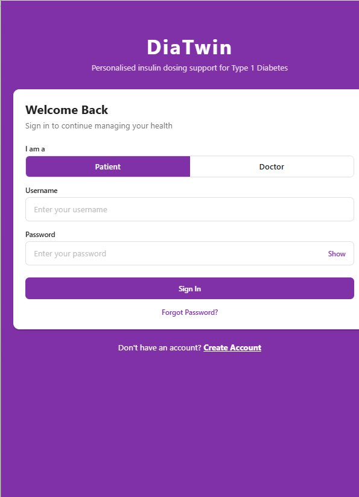
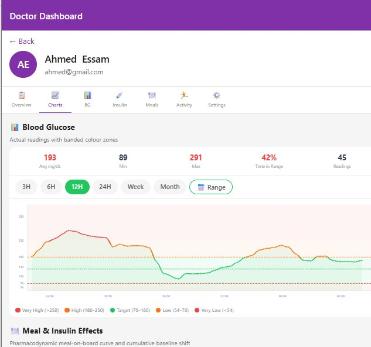
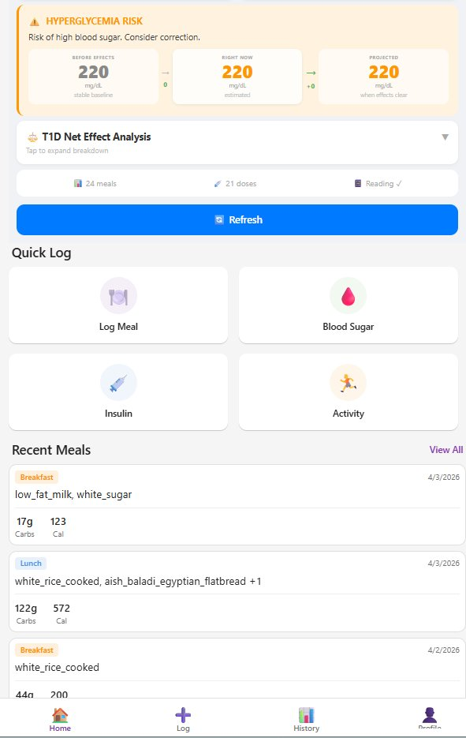
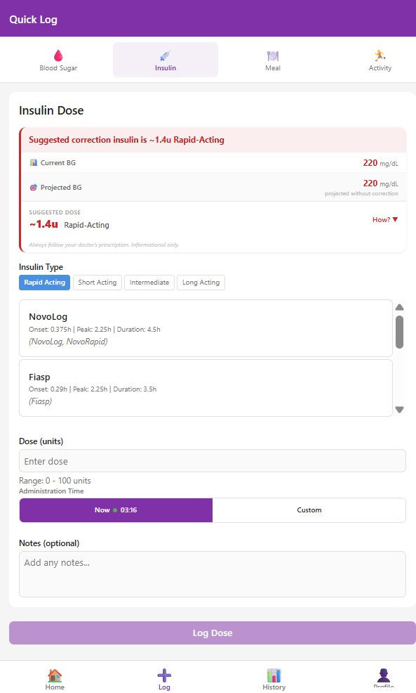

Clinical AI insulin dosing support system for Type 1 Diabetes — integrating a proprietary PK/PD engine, Gemini Vision food scanning, and real-time CGM monitoring into a production-grade monorepo platform.

Dual-platform gamma engine (Python + TypeScript, bit-for-bit identical) modelling Insulin on Board (IOB) and Meal on Board (MOB) with circadian baseline correction. Covers 14 insulin analogues per AWMF S3 guideline 057-013.
Gemini 2.5 Flash Vision pipeline converts food photos into structured nutrition data instantly — carbohydrates, protein, fat, glycaemic index — no manual entry required.
Abbott FreeStyle Libre / LibreLinkUp integration with automatic unit conversion and token caching. Glucose trends fed directly into the dosing algorithm.
RL model trained on 50,000+ real meal-outcome pairs personalises dosing suggestions over time, adapting to individual patient response patterns.
JWT HS256 authentication and Fernet symmetric encryption for CGM credentials at rest and in transit. SecureStore for mobile credential management.
60-second in-process LRU cache for patient constants to absorb mobile cold-start bursts. Redis-backed session management and Vercel edge deployment.
Point the camera at any meal — the Gemini 2.5 Flash Vision pipeline extracts a full nutritional breakdown and calculates the optimal carbohydrate-insulin ratio based on the patient's personal PK/PD profile.
[ AI Food Scanning Interface ]
Live glucose data from Abbott FreeStyle Libre is overlaid with the calculated Insulin on Board curve, giving patients and clinicians a clear picture of the active insulin-glucose interplay at any moment.

35+ REST endpoints. PK/PD computation, RL inference, CGM proxy, and nutrition parsing all server-side. JWT middleware on every protected route.
Progressive Web App with offline capability, service workers, and responsive layouts. Deployed on Vercel with edge caching.
Cross-platform mobile app (iOS + Android) with SecureStore for credential management, Expo Camera for food scanning, and EAS Build.
[ DiaTwin Monorepo Architecture Diagram ]
Add your own architecture diagram here

[ Food Scan Screen ]
